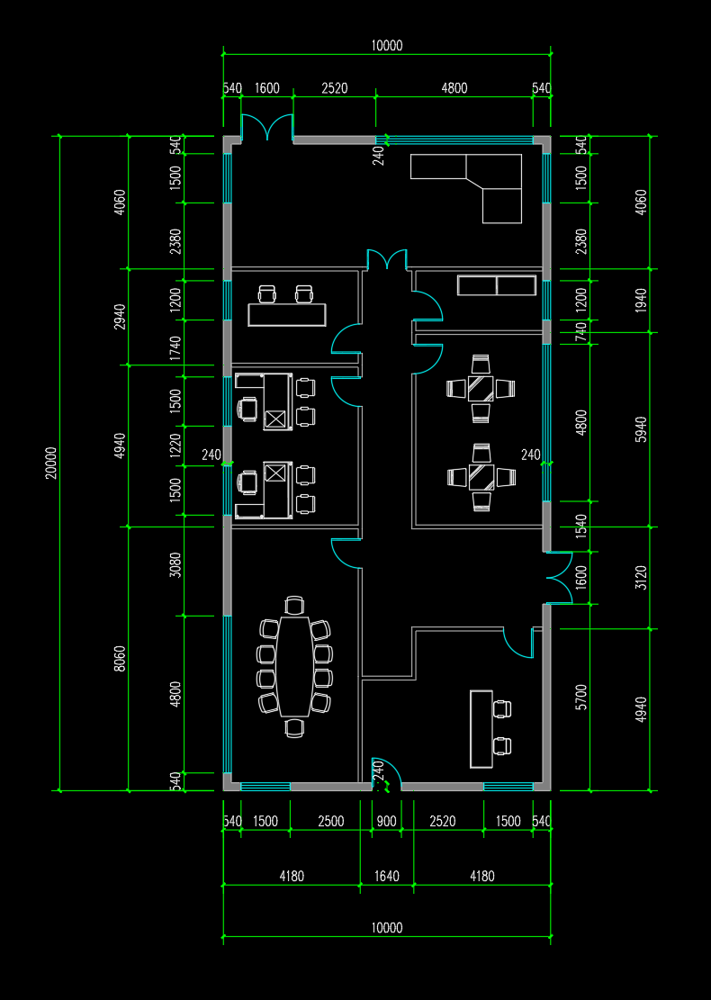

{kind=link}


工作模型只收到两张原图和东侧观察任务。以下为它提交的观察及双方向计算， 不能当作独立验收或整案 BIM 成绩；语义核验见 README。
| 图 | 原图轴标定 | 开口 ID | 原图像素区间 | 类型（模型判读） |
|---|---|---|---|---|
| plan | [[151, 0], [878, 20]] | P_W1_1500 | [170, 225] | window |
| plan | [[151, 0], [878, 20]] | P_W2_1200 | [311, 355] | window |
| plan | [[151, 0], [878, 20]] | P_W3_740 | [355, 382] | window |
| plan | [[151, 0], [878, 20]] | P_D1_1600 | [614, 669] | door |
| elevation | [[373, 0], [2261, 20]] | E_D1_1600 | [911, 1062] | door |
| elevation | [[373, 0], [2261, 20]] | E_W_big_4800 | [1208, 1661] | window |
| elevation | [[373, 0], [2261, 20]] | E_W_med1_1200 | [1730, 1844] | window |
| elevation | [[373, 0], [2261, 20]] | E_W_med2_1500 | [2070, 2210] | window |
| 坐标槽 | 扫描 / 候选 | 取值 | 原图像素 |
|---|---|---|---|
| plan.axis_anchors[0][0] | profile_002 / C01 | peak | 151 |
| plan.axis_anchors[1][0] | profile_002 / C08 | peak | 878 |
| plan.openings[0].pixels[0] | profile_008 / C01 | peak | 170 |
| plan.openings[0].pixels[1] | profile_008 / C02 | peak | 225 |
| plan.openings[1].pixels[0] | profile_006 / C01 | peak | 311 |
| plan.openings[1].pixels[1] | profile_006 / C02 | peak | 355 |
| plan.openings[2].pixels[0] | profile_004 / C01 | peak | 355 |
| plan.openings[2].pixels[1] | profile_004 / C02 | peak | 382 |
| plan.openings[3].pixels[0] | profile_007 / C01 | peak | 614 |
| plan.openings[3].pixels[1] | profile_007 / C03 | peak | 669 |
| elevation.axis_anchors[0][0] | profile_009 / C01 | peak | 373 |
| elevation.axis_anchors[1][0] | profile_009 / C02 | peak | 2261 |
| elevation.openings[0].pixels[0] | profile_011 / C01 | peak | 911 |
| elevation.openings[0].pixels[1] | profile_011 / C06 | peak | 1062 |
| elevation.openings[1].pixels[1] | profile_011 / C07 | peak | 1661 |
| elevation.openings[2].pixels[1] | profile_013 / C02 | peak | 1844 |
| elevation.openings[3].pixels[1] | profile_013 / C03 | peak | 2210 |
| 方向 | 均值误差 m | 最大误差 m |
|---|---|---|
| elevation_forward | 6.419316671717997 | 9.227744037488634 |
| elevation_reverse | 0.7110935933602219 | 4.799777935793719 |
{
"mean_abs_endpoint_residual_gap_m": 5.708223078357775,
"ambiguity_tolerance_m": 0.05,
"lower_residual_direction": "elevation_reverse",
"relative_error_separated": true,
"absolute_fit_status": "not_evaluated"
}